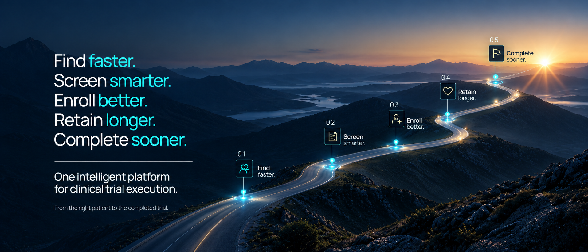

01/ 06
FIND
Continuously identify eligible patients from the EHR and assess dropout risk early with the ClinTrialAI Retention Index™.
AI-NATIVE CLINICAL TRIAL EXECUTION
One AI productivity layer across your
entire clinical
trial portfolio.
Built by the people who run trials.
For the people who run trials.
ONE PLATFORM. THE ENTIRE TRIAL LIFECYCLE.
Continuously identify eligible patients from the EHR and assess dropout risk early with the ClinTrialAI Retention Index™.
From identified to trial-ready. Automate consent, visit scheduling, and trial-required data capture from the EHR.
Move qualified patients seamlessly into the trial.
Protocol-driven randomization, built into the workflow.
Identify emerging dropout risk and enable earlier, targeted intervention.
Automate follow-up, data capture, CRFs, and closeout.
THE PROBLEM
Manual chart review, fragmented workflows, and labor-intensive follow-up slow trials down.
Finding the right patients is hard when teams must search records one chart at a time.
Critical trial information lives across disconnected systems, screens, and documents.
Getting patients to completion is harder when every follow-up depends on manual coordination.
Finding the right patients is hard. Getting them to completion is harder.
ClinTrialAI turns manual trial workflows into
intelligent, connected infrastructure.
CLINTRIALAI RETENTION INDEX™
RETENTION INTELLIGENCE FROM DAY ONE
The ClinTrialAI Retention Index™ assesses dropout risk during recruitment and continues monitoring after enrollment—helping trial teams identify who may need additional support and intervene earlier.
Recruit with
retention in mind.
Illustrative interface and demo data. Not a clinically validated prediction.
Recruitment gets patients into trials.
Retention gets trials to the finish line.
BUILT FROM INSIDE THE TRIAL
Designed around the real workflows of investigators, coordinators, and clinical research teams.
Built by trialists. Designed for trial teams.
Powered by AI.
BUILT FOR THE RESEARCH ENTERPRISE
ONE PLATFORM. MULTIPLE TRIALS.
Built to work across investigators, coordinators, therapeutic areas, and trials—giving the health system a common execution layer for clinical research.
More patients. More trials. Less manual work.

Find faster. Screen smarter. Enroll better. Retain longer. Complete sooner.
From the right patient to the completed trial.
THE NEXT CHAPTER OF CLINICAL RESEARCH
Discover how ClinTrialAI can create one intelligent workflow
across your
clinical research portfolio.